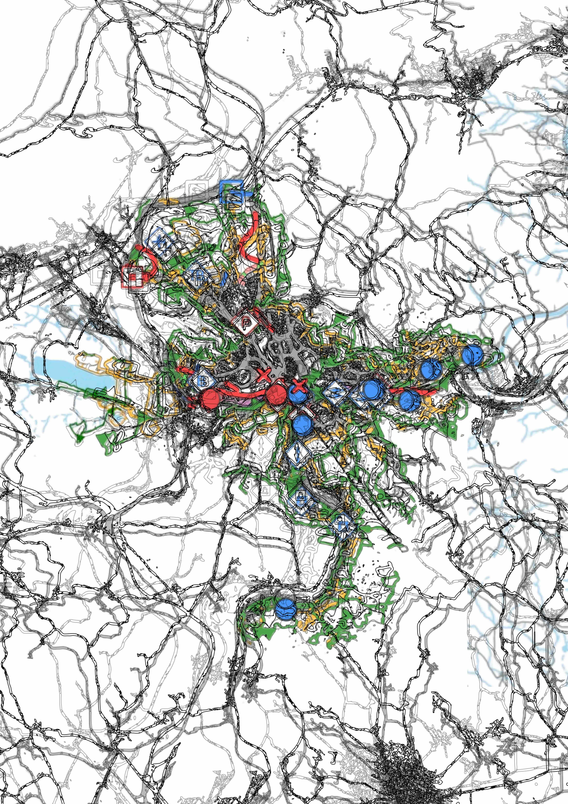

topné spirály v tvých očích
šeptám ti příběhy, aby cesta lépe ubíhala
vysoké věže vodorovně přepažené
rámují krajinu těžkou mřížkou
ty a já tvoříme řetězec
hluboké oblouky ohýbaných vln
z pokrývky signálu
se probouzíme kokrháním silnic a dálnic
těžký dotyk pneumatik hloubí asfaltová koryta
kdybych se natáhla, dosáhnu až do Prahy
devadesát kilometrů zatrubněného těla
mezi kočičími hlavami zásilkové boxy krys
strategie schovaných semínek
aby budoucnost byla naše
na holubích křídlech prach ze silnice, kapky benzínových kaluží
dělnictvo pohybu
vysokorychlostní čas
ani mapy neví, kudy teče
tady je to krásné, tady nic není
prohledám vnitřek skály, zavolám dopravní tepny v okolí
dutá těla s cizími vnitřnostmi
rostou rychle - často ve více kusech
od devatenáctého století kreslím do památníku tvého těla
už skoro dochází místo
evropská síť se klepe, pavouk se blíží
již žádný průměr, již žádná promarněná příležitost, hlásáme ve stínu skladových hal
usazující se sediment obarvuje hladinu do temné hluboké modré